COMBINE20
COMBINE Symposium 2020
Last built: 2020-11-24 09:02:18
| Parameter | Value |
|---|---|
| hashtag | #COMBINE20 |
| start_day | 2020-11-23 |
| end_day | 2020-11-23 |
| timezone | Australia/Sydney |
| theme | theme_light |
| accent | #4a86e7 |
| accent2 | #A4C2F3 |
| kcore | 2 |
| topics_k | 6 |
| bigram_filter | 3 |
| fixed | TRUE |
| seed | 1 |
Introduction
An analysis of tweets for the query #COMBINE20 related to the COMBINE Student Symposium held virtually from 2020-11-23 to 2020-11-23. A total of 138 tweets from 43 users were collected using the {rtweet} R package.
1 Timeline
1.1 Tweets by day
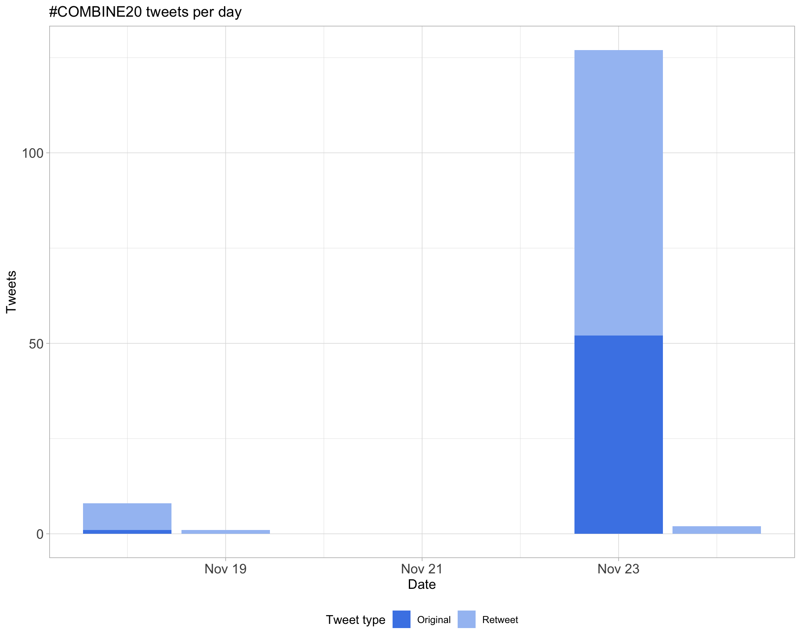
1.2 Tweets by day and time
Filtered for dates 2020-11-23 - 2020-11-23 in the Australia/Sydney timezone.
2 Users
2.1 Top tweeters
Overall
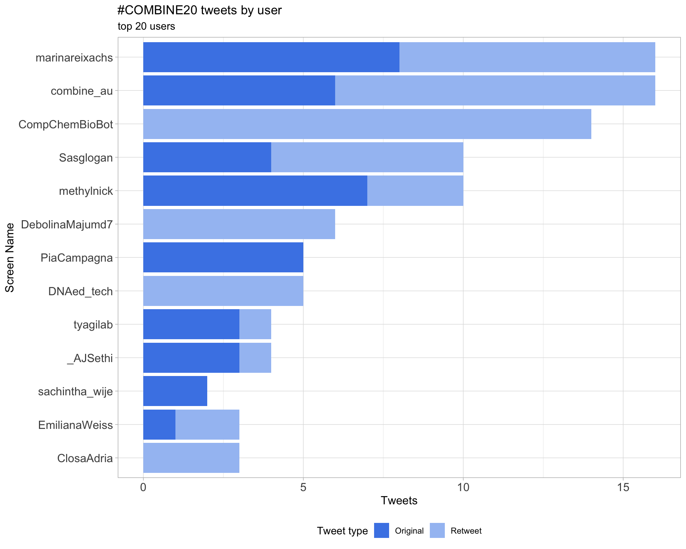
Original
Retweets
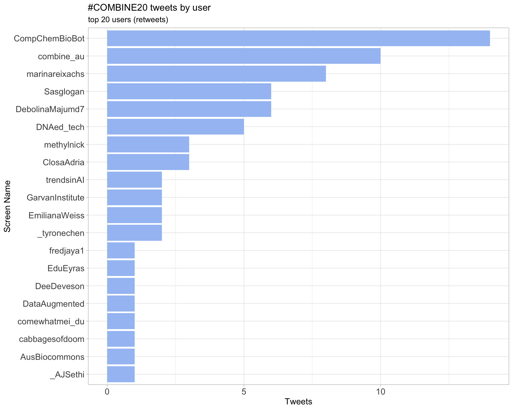
2.2 Retweet proportion
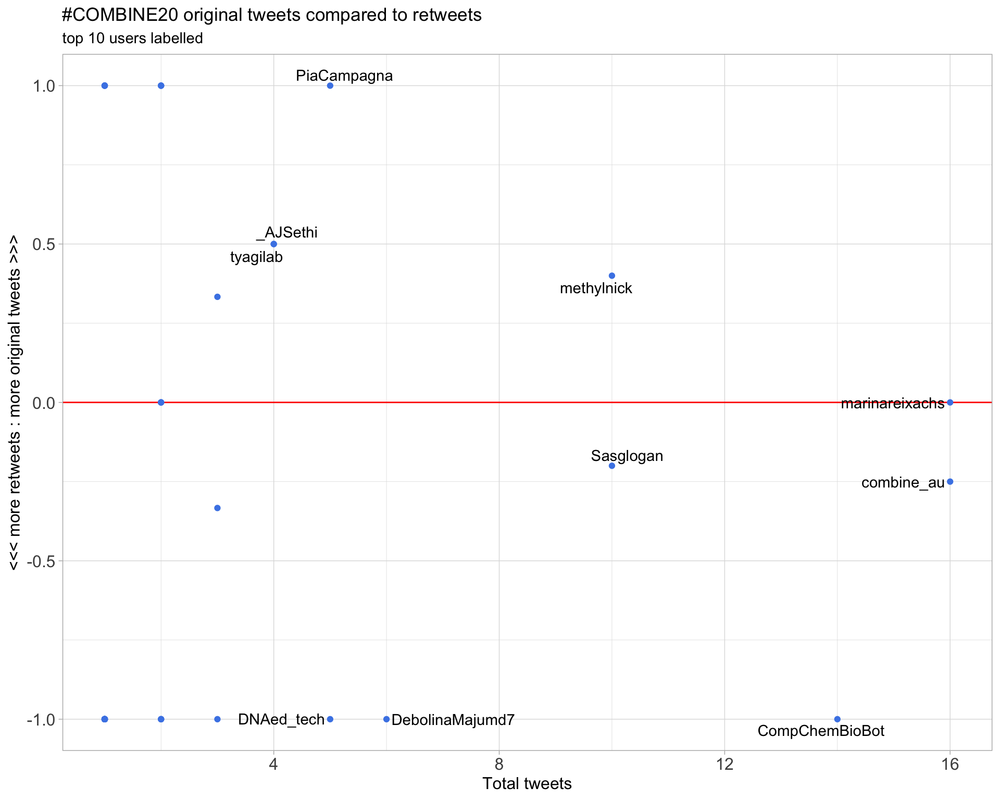
2.3 Top tweeters timeline
2.4 Top tweeters by day
Overall
Day 1
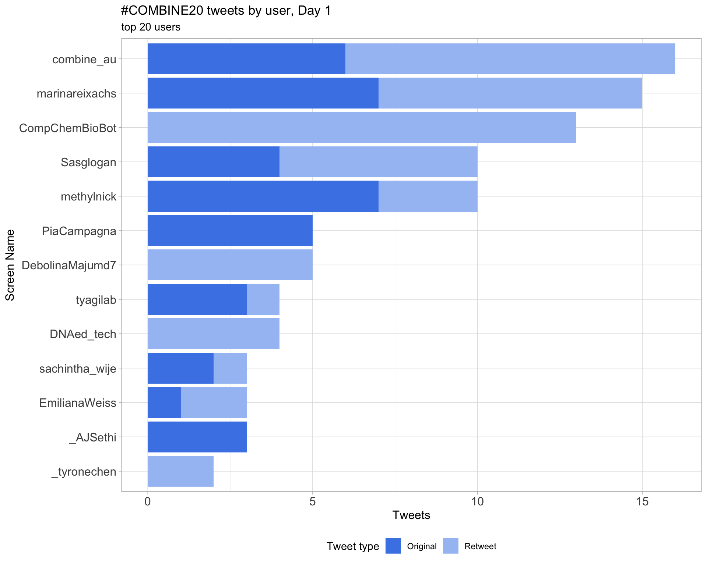
Original
Day 1
Retweets
Day 1
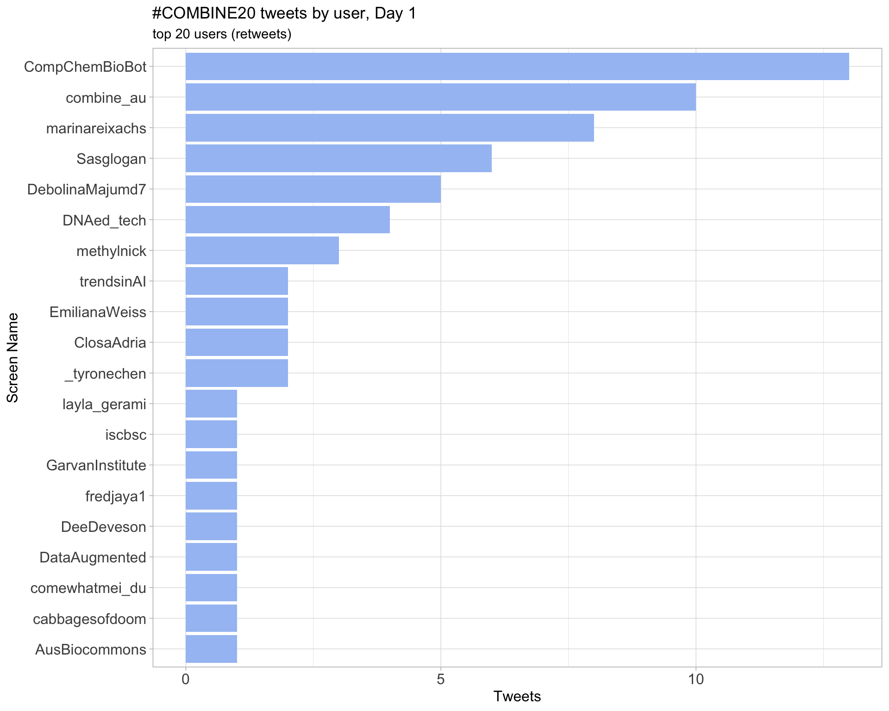
3 Sources
Users
Tweets
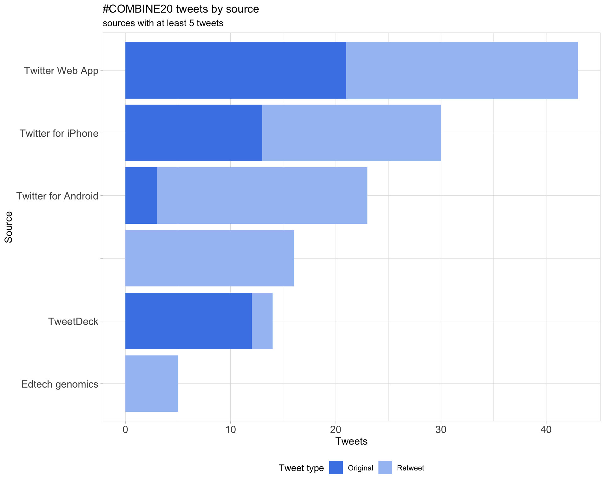
4 Networks
4.1 Replies
The “replies network”, composed from users who reply directly to one another, coloured by PageRank.
4.2 Mentions
The “mentions network”, where users mention other users in their tweets. Filtered for a k-core of 2. Node colour and size adjusted according to PageRank score.
5 Tweet types
5.1 Retweets
Proportion
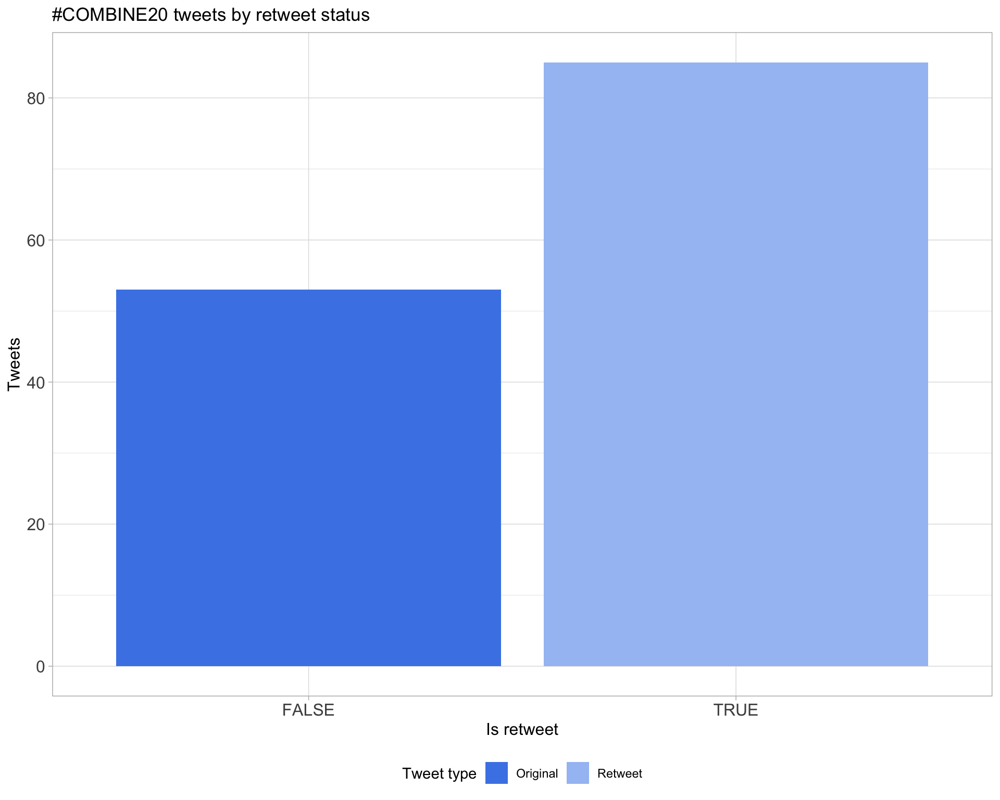
Count
Top 10
| screen_name | text | retweet_count |
|---|---|---|
| _AJSethi | Keep an eye out for very exciting #COMBINE20 bioinformatics and computational biology careers panel at 5pm AEDT today! #phdchat #bioinformatics #compbio https://t.co/LjBhvrJvhp | 9 |
| marinareixachs | @combine_au Symposium 2020 committee on one of our last meetings before the big day. Thanks for all the work! Join us next Monday 23rd Nov https://t.co/PQZGPgrfiW #COMBINE20 #Bioinformatics #phdlife https://t.co/ANAVPaolqH | 8 |
| combine_au | Careers panel is going to start soon. You can already start to ask questions on zoom #COMBINE20 https://t.co/D9O7YfUx0I | 7 |
| marinareixachs | Getting started from the Canberra satellite event. Can’t be more excited! @combine_au #COMBINE20 https://t.co/qmNolba9Nr | 4 |
| Sasglogan | Great talk by Joel Robertson at COMBINE2020! #COMBINE20 #Bioinformatics #phdlife https://t.co/tefdDmuLSG | 4 |
| PiaCampagna | Very much looking forward to this @combine_au panel at 5pm today with @JenniferC_Boer (@RMITBioinfo) @SaraBallouz (@GarvanInstitute) and @methylnick (@MonashBioinfo) ü§© #COMBINE20 https://t.co/GiiUDA8i4C | 4 |
| PatSullivann | Very excited to chair the next session of #COMBINE20! What a fabulous line-up for our genomics session üߨ https://t.co/pG0CyqiUhw | 4 |
| methylnick | @SaraBallouz next in the @combine_au #careers session about @GarvanInstitute where she leads a team in single cell research, computational. A common theme is the global nature of research. #ECRChat #stem #bioinformatics #COMBINE20 https://t.co/UU8UXEJlpe | 3 |
| marinareixachs | @renzobalb presenting his work on Alu Repeat Diversity in the Human Genome from Canberra satellite. It is amazing to have that hybrid virtual & on site symposium. #COMBINE20 @combine_au https://t.co/xmbsctLbmD | 3 |
| LeganaFingerhut | Flashtalks time @combine_au #COMBINE20 with @fredjaya1 discussing his research on sequence diversity and recombination, neat! https://t.co/3n5e4L8IcG | 3 |
Most retweeted
5.2 Likes
Proportion
Count
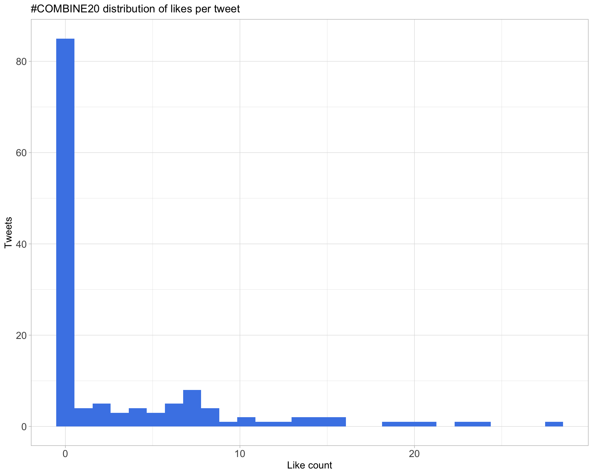
Top 10
| screen_name | text | favorite_count |
|---|---|---|
| PatSullivann | Very excited to chair the next session of #COMBINE20! What a fabulous line-up for our genomics session üߨ https://t.co/pG0CyqiUhw | 28 |
| NhiHin | An interesting showcase of results from @baerlachlan on the effects of incomplete ribosomal RNA removal from RNA-seq data and importantly, what can be done to address this issue @forgetfulfishy #COMBINE20 @combine_au #Bioinformatics https://t.co/bsg6annWwq | 24 |
| marinareixachs | @combine_au Symposium 2020 committee on one of our last meetings before the big day. Thanks for all the work! Join us next Monday 23rd Nov https://t.co/PQZGPgrfiW #COMBINE20 #Bioinformatics #phdlife https://t.co/ANAVPaolqH | 23 |
| _AJSethi | Keep an eye out for very exciting #COMBINE20 bioinformatics and computational biology careers panel at 5pm AEDT today! #phdchat #bioinformatics #compbio https://t.co/LjBhvrJvhp | 21 |
| marinareixachs | Getting started from the Canberra satellite event. Can’t be more excited! @combine_au #COMBINE20 https://t.co/qmNolba9Nr | 20 |
| PiaCampagna | Very much looking forward to this @combine_au panel at 5pm today with @JenniferC_Boer (@RMITBioinfo) @SaraBallouz (@GarvanInstitute) and @methylnick (@MonashBioinfo) ü§© #COMBINE20 https://t.co/GiiUDA8i4C | 19 |
| combine_au | Careers panel is going to start soon. You can already start to ask questions on zoom #COMBINE20 https://t.co/D9O7YfUx0I | 16 |
| Katarina_Stuart | Combine2020 virtual conference kicking off with transcripts, artificial neural networks, and plants! Congrats to the committee for putting together such an interesting and diverse program üߨ #COMBINE20 @combine_au | 16 |
| fredjaya1 | Woohoo! #COMBINE20 is online, with @AceJustinCase on DGE during gestation https://t.co/1ou750s4nt | 15 |
| LeganaFingerhut | Flashtalks time @combine_au #COMBINE20 with @fredjaya1 discussing his research on sequence diversity and recombination, neat! https://t.co/3n5e4L8IcG | 15 |
Most likes
5.3 Quotes
Proportion
Count
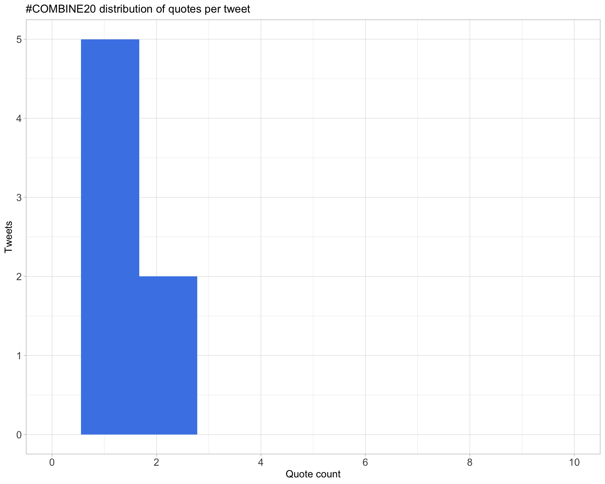
Top 10
| screen_name | text | quote_count |
|---|---|---|
| methylnick |
49 participants and counting #COMBINE20 #bioinformatics @zoom_us Looking forward to the conversations with both academic and industry colleagues. #EMCRChat #STEM https://t.co/jG1Py5jk9P |
2 |
| marinareixachs | Don’t miss @combine_au symposium Careers Panel starting at 5pm. #COMBINE20 https://t.co/vJcCsW0cHC | 2 |
| sachintha_wije | Some Key takeaways: 1. If you want to excel as a computational biologist, practice, practice, practice 2. The skills you gain during your PhD will be useful in the industry as it is in academia. 3. Persistence is key to success @combine_au #COMBINE20 https://t.co/qactYJQuII | 2 |
| sachintha_wije | Thank you @methylnick @SaraBallouz @JenniferC_Boer, Dr Anastasios Papaioannou and Dr Monther Alhamdoosh for your time and wisdom! Massive shoutout to @PiaCampagna and @DebolinaMajumd7 for their hard work in organising. @combine_au #COMBINE20 https://t.co/qactYJQuII | 2 |
| PiaCampagna | Very much looking forward to this @combine_au panel at 5pm today with @JenniferC_Boer (@RMITBioinfo) @SaraBallouz (@GarvanInstitute) and @methylnick (@MonashBioinfo) ü§© #COMBINE20 https://t.co/GiiUDA8i4C | 1 |
| baerlachlan | Thanks Nhi! Was great to be given the opportunity by @combine_au to give a quick summary of my exploration so far. And cheers to @StevePederson8 @forgetfulfishy @NhiHin @kariisssaaa and Morgan for their part in the research. Exciting week ahead! #COMBINE20 https://t.co/MqDjHWONs8 | 1 |
| combine_au |
Bioinformatics in the industry, by the view of @malhamdoosh #COMBINE20 https://t.co/wM4UbfNJUz |
1 |
| combine_au | Career advice: Plan it in order to gain skills @malhamdoosh #COMBINE20 https://t.co/2PG8F9L0Ko | 1 |
| marinareixachs | Great job team! It was the perfect way to close the day #COMBINE20 https://t.co/jHdNNo6Slg | 1 |
Most quoted
6 Media
Proportion
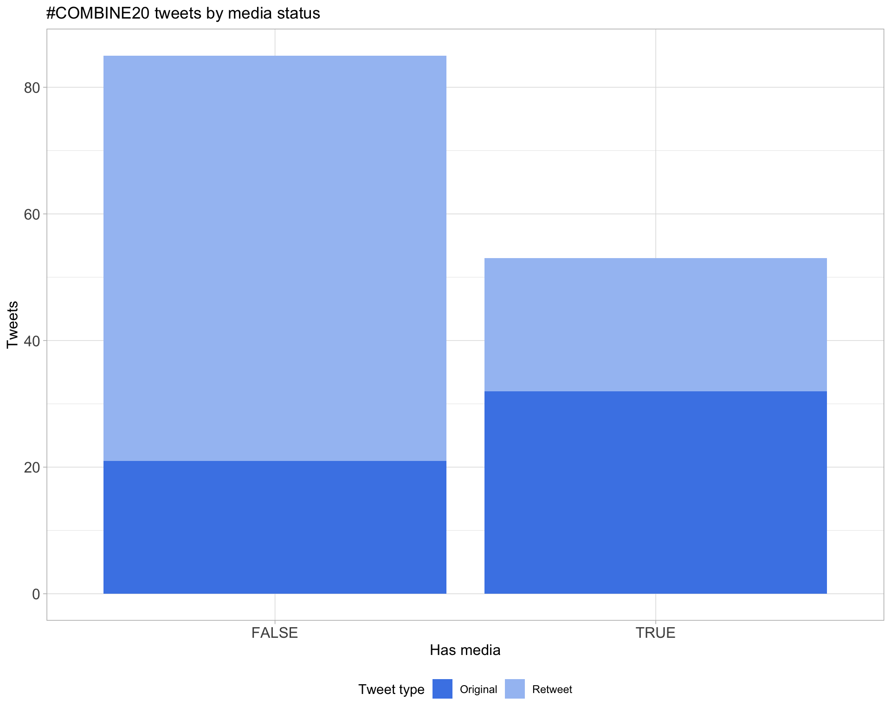
Top 10
| screen_name | text | favorite_count |
|---|---|---|
| PatSullivann | Very excited to chair the next session of #COMBINE20! What a fabulous line-up for our genomics session üߨ https://t.co/pG0CyqiUhw | 28 |
| NhiHin | An interesting showcase of results from @baerlachlan on the effects of incomplete ribosomal RNA removal from RNA-seq data and importantly, what can be done to address this issue @forgetfulfishy #COMBINE20 @combine_au #Bioinformatics https://t.co/bsg6annWwq | 24 |
| marinareixachs | @combine_au Symposium 2020 committee on one of our last meetings before the big day. Thanks for all the work! Join us next Monday 23rd Nov https://t.co/PQZGPgrfiW #COMBINE20 #Bioinformatics #phdlife https://t.co/ANAVPaolqH | 23 |
| _AJSethi | Keep an eye out for very exciting #COMBINE20 bioinformatics and computational biology careers panel at 5pm AEDT today! #phdchat #bioinformatics #compbio https://t.co/LjBhvrJvhp | 21 |
| marinareixachs | Getting started from the Canberra satellite event. Can’t be more excited! @combine_au #COMBINE20 https://t.co/qmNolba9Nr | 20 |
| combine_au | Careers panel is going to start soon. You can already start to ask questions on zoom #COMBINE20 https://t.co/D9O7YfUx0I | 16 |
| fredjaya1 | Woohoo! #COMBINE20 is online, with @AceJustinCase on DGE during gestation https://t.co/1ou750s4nt | 15 |
| LeganaFingerhut | Flashtalks time @combine_au #COMBINE20 with @fredjaya1 discussing his research on sequence diversity and recombination, neat! https://t.co/3n5e4L8IcG | 15 |
| methylnick | Some great questions here from @combine_au #combine20 #careers panel session. What an engaged audience. https://t.co/1dmlDc1iio | 13 |
| tyagilab | .@_tyronechen is presenting his data harmonisation approach to process #SARSCoV2 #multiomics data that he applied to identify #COVID19 drug targets. #COMBINE20 @combine_au https://t.co/Ydt8pCk83J | 13 |
6.1 Most liked image

7 Tweet text
7.1 Word cloud
The top 100 words used 3 or more times.
7.3 Emojis
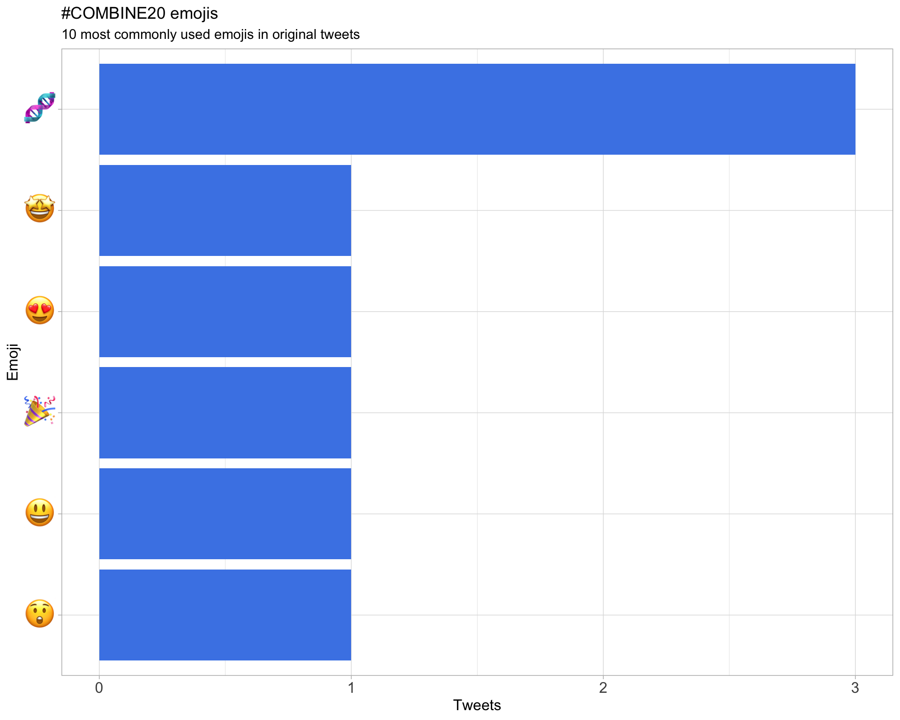
7.4 Bigram graph
Words that were tweeted next to each other at least 3 times.
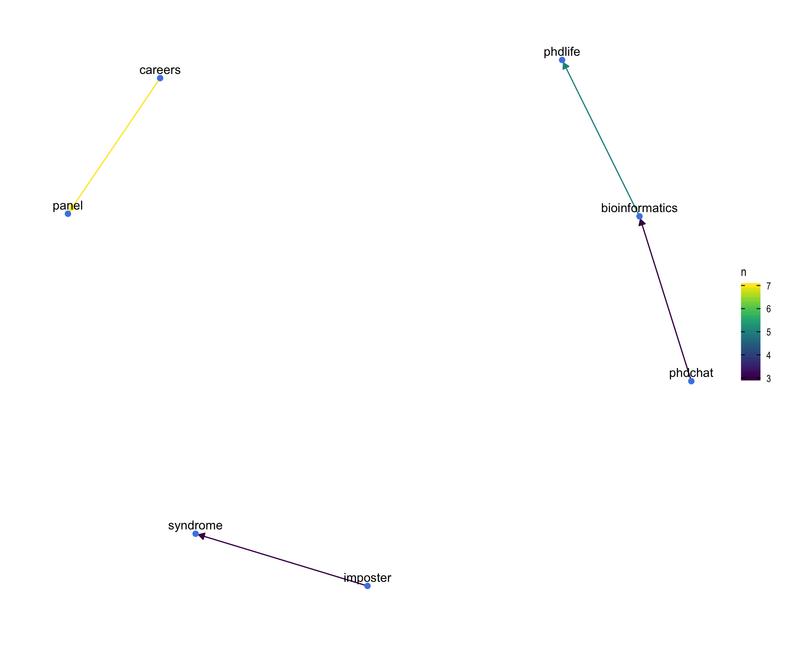
7.5 Topic modelling
Top 10 words associated with 6 topics identified by LDA.
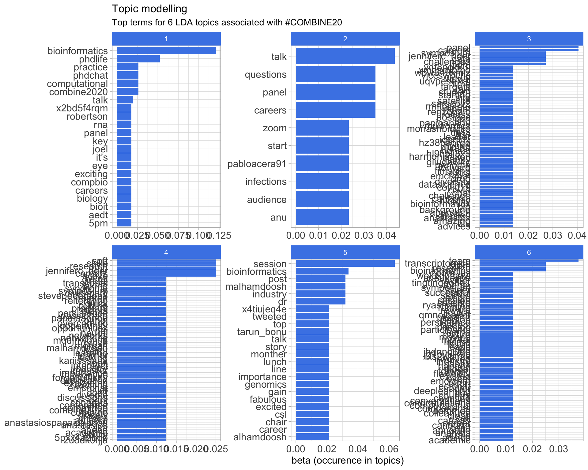
7.5.1 Representative tweets
Most representative tweets for each topic
Topic 1
| screen_name | text | gamma |
|---|---|---|
| sachintha_wije | Some Key takeaways: 1. If you want to excel as a computational biologist, practice, practice, practice 2. The skills you gain during your PhD will be useful in the industry as it is in academia. 3. Persistence is key to success @combine_au #COMBINE20 https://t.co/qactYJQuII | 0.9960040 |
| SeqComplete | #bioinformatics #bioit @_AJSethi: ‘Keep an eye out for very exciting #COMBINE20 bioinformatics and computational biology careers panel at 5pm AEDT today! #phdchat #bioinformatics #compbio’ https://t.co/wFG7WUnLoD, see more https://t.co/X2bD5F4Rqm | 0.9957556 |
| NhiHin | An interesting showcase of results from @baerlachlan on the effects of incomplete ribosomal RNA removal from RNA-seq data and importantly, what can be done to address this issue @forgetfulfishy #COMBINE20 @combine_au #Bioinformatics https://t.co/bsg6annWwq | 0.9957556 |
| _AJSethi | Keep an eye out for very exciting #COMBINE20 bioinformatics and computational biology careers panel at 5pm AEDT today! #phdchat #bioinformatics #compbio https://t.co/LjBhvrJvhp | 0.9947822 |
| marinareixachs | @combine_au Symposium 2020 committee on one of our last meetings before the big day. Thanks for all the work! Join us next Monday 23rd Nov https://t.co/PQZGPgrfiW #COMBINE20 #Bioinformatics #phdlife https://t.co/ANAVPaolqH | 0.9943503 |
| SeqComplete | #bioinformatics #bioit @Sasglogan: ‘Great talk by Joel Robertson at COMBINE2020! #COMBINE20 #Bioinformatics #phdlife’ https://t.co/u8eKHPHvaI, see more https://t.co/X2bD5F4Rqm | 0.9932296 |
| _AJSethi | @malhamdoosh “It’s not about publishing paper; it’s about more than that”; brilliant #bioinformatics #careeradvice at #combine20 | 0.9915541 |
| Sasglogan | How to combat imposter syndrome? “By being honest with what you don’t know”. Great answer! #COMBINE20 #Bioinformatics #phdlife #phdchat | 0.9915541 |
| Sasglogan | Great talk by Joel Robertson at COMBINE2020! #COMBINE20 #Bioinformatics #phdlife https://t.co/tefdDmuLSG | 0.9903615 |
| Sasglogan | COMBINE2020 starts in 45 minutes!!!!üòç Come and join for an amazing day of talks!! #COMBINE20 #Bioinformatics #phdlife | 0.5307175 |
Topic 2
| screen_name | text | gamma |
|---|---|---|
| StevenJMorg | .@pabloacera91 at ANU on identifying viral co-infections in SARS-CoV-2 patients. I had no idea co-infections were so common. PACIFIC looks like a great tool #COMBINE20 https://t.co/jo5DRFevpu | 0.9951527 |
| marinareixachs | Our second speaker from ANU presenting live for our audience and Zoom attendees. Awesome talk by Tim McInerney. #COMBINE20 @combine_au https://t.co/avRk8pHDBr | 0.9938405 |
| LeganaFingerhut | Flashtalks time @combine_au #COMBINE20 with @fredjaya1 discussing his research on sequence diversity and recombination, neat! https://t.co/3n5e4L8IcG | 0.9924841 |
| methylnick | @combine_au Imposter syndrome, that is a hard one, but I would say to surround yourself with supportive colleagues and there are plenty at @MonashBioinfo #EMCRChat #combine20 | 0.9924841 |
| _AJSethi | Fantastic careers panel talk by @methylnick at #COMBINE20 Important food for thought for a young computational biologist https://t.co/0S8ZGJc3a5 | 0.9915541 |
| tyagilab |
Today @ryashpal89 @tarun_bonu and @_tyronechen from the lab are presenting at the @combine_au symposium #COMBINE20 All the best and thank you for all the questions and feedback. @tsonika #tyagilab |
0.9903615 |
| methylnick | Some great questions here from @combine_au #combine20 #careers panel session. What an engaged audience. https://t.co/1dmlDc1iio | 0.9903615 |
| combine_au | Careers panel is going to start soon. You can already start to ask questions on zoom #COMBINE20 https://t.co/D9O7YfUx0I | 0.9903615 |
| fredjaya1 | Woohoo! #COMBINE20 is online, with @AceJustinCase on DGE during gestation https://t.co/1ou750s4nt | 0.9887768 |
| EmilianaWeiss | COMBINE2020 - An amazing talk by @pabloacera91 #COMBINE20 https://t.co/X9XZEYhfQ2 | 0.9865683 |
Topic 3
| screen_name | text | gamma |
|---|---|---|
| methylnick | Anastasios Papioannou finishing off the panel chat @combine_au #careers talk, I am happy to go over time if need be. #COMBINE20 What a great line up. We all have a biology background, the BIO in #bioinformatics @EMCRChat #DataScience https://t.co/HL9HBIi3x3 | 0.9960040 |
| marinareixachs | @renzobalb presenting his work on Alu Repeat Diversity in the Human Genome from Canberra satellite. It is amazing to have that hybrid virtual & on site symposium. #COMBINE20 @combine_au https://t.co/xmbsctLbmD | 0.9951527 |
| tyagilab | .@_tyronechen is presenting his data harmonisation approach to process #SARSCoV2 #multiomics data that he applied to identify #COVID19 drug targets. #COMBINE20 @combine_au https://t.co/Ydt8pCk83J | 0.9947822 |
| PiaCampagna | .@SaraBallouz being honest about the challenges on the way from PhD student to postdoc to group leader, with COVID being an extra challenge in 2020 @combine_au #COMBINE20 https://t.co/Hz38bAoRgO | 0.9932296 |
| PiaCampagna | Very much looking forward to this @combine_au panel at 5pm today with @JenniferC_Boer (@RMITBioinfo) @SaraBallouz (@GarvanInstitute) and @methylnick (@MonashBioinfo) ü§© #COMBINE20 https://t.co/GiiUDA8i4C | 0.9903615 |
| marinareixachs | Don’t miss @combine_au symposium Careers Panel starting at 5pm. #COMBINE20 https://t.co/vJcCsW0cHC | 0.9903615 |
| combine_au | Careers advices from @JenniferC_Boer #COMBINE20 https://t.co/wBw349XMlZ | 0.9832778 |
| combine_au | Challenges along the way pointed out by @SaraBallouz #COMBINE20 https://t.co/uqvPeSE7Rh | 0.9672134 |
Topic 4
| screen_name | text | gamma |
|---|---|---|
| PiaCampagna | Dr Anastasios Papaioannou (Intersect) explaining the value of the soft skills learnt during a PhD, such as the ability to be an active learner, as well as taking opportunities that don’t appear closely related to your area of interest @combine_au #COMBINE20 https://t.co/FqJySqPYy0 | 0.9962250 |
| baerlachlan | Thanks Nhi! Was great to be given the opportunity by @combine_au to give a quick summary of my exploration so far. And cheers to @StevePederson8 @forgetfulfishy @NhiHin @kariisssaaa and Morgan for their part in the research. Exciting week ahead! #COMBINE20 https://t.co/MqDjHWONs8 | 0.9954741 |
| KandhariNitika | If, why and how to move to the dark side aka Industry, overcoming imposter syndrome and much more.. Great discussions with the careers panel in Combine Symposium @combine_au #COMBINE20 @methylnick @JenniferC_Boer @SaraBallouz @malhamdoosh @anastasiospapaioannou | 0.9954741 |
| Katarina_Stuart | Combine2020 virtual conference kicking off with transcripts, artificial neural networks, and plants! Congrats to the committee for putting together such an interesting and diverse program üߨ #COMBINE20 @combine_au | 0.9951527 |
| PiaCampagna | .@JenniferC_Boer reiterating the importance of persistence and networking in academia to find jobs & research your passionate about working on @combine_au #COMBINE20 https://t.co/2U8dK0Fjja | 0.9932296 |
| methylnick | @combine_au Yes yes yes, the soft skills, need to have this. The PhD gives you active learning, but these are important! @combine_au #COMBINE20 #careers #EMCRChat https://t.co/5PxX4a9BQP | 0.9915541 |
Topic 5
| screen_name | text | gamma |
|---|---|---|
| PiaCampagna | Dr Monther Alhamdoosh (CSL) on the importance of planning for post-PhD life as early as possible in order to gain the necessary skillsets, as well as importance of mentors in establishing your career @combine_au #COMBINE20 https://t.co/yLZin6Ls6a | 0.9957556 |
| sachintha_wije | Thank you @methylnick @SaraBallouz @JenniferC_Boer, Dr Anastasios Papaioannou and Dr Monther Alhamdoosh for your time and wisdom! Massive shoutout to @PiaCampagna and @DebolinaMajumd7 for their hard work in organising. @combine_au #COMBINE20 https://t.co/qactYJQuII | 0.9951527 |
| rnomics | Top #tweeted story in #bioinformatics: @PatSullivann: ‚ÄòVery excited to chair the next session of #COMBINE20! What a fabulous line-up for our genomics session üߨ‚Äô https://t.co/b8h5LoZBQk, see more https://t.co/x4TiUjeQ4E | 0.9947822 |
| rnomics | Top #tweeted story in #bioinformatics: @KandhariNitika: ‘Post lunch, session 2, talk by @tarun_bonu @combine_au #combine20’ https://t.co/82lv7QsKOq, see more https://t.co/x4TiUjeQ4E | 0.9938405 |
| methylnick |
@malhamdoosh talking about @CSL and his role in industry to @combine_au #careers #EMCRChat Darkside/Industry #combine20 https://t.co/i12Q1Ctzu1 |
0.9932296 |
| PatSullivann | Very excited to chair the next session of #COMBINE20! What a fabulous line-up for our genomics session üߨ https://t.co/pG0CyqiUhw | 0.9915541 |
| combine_au | Career advice: Plan it in order to gain skills @malhamdoosh #COMBINE20 https://t.co/2PG8F9L0Ko | 0.9903615 |
| KandhariNitika | Post lunch, session 2, talk by @tarun_bonu @combine_au #combine20 https://t.co/5rzkh7ZAKm | 0.9887768 |
| combine_au |
Bioinformatics in the industry, by the view of @malhamdoosh #COMBINE20 https://t.co/wM4UbfNJUz |
0.9865683 |
Topic 6
| screen_name | text | gamma |
|---|---|---|
| methylnick | @SaraBallouz next in the @combine_au #careers session about @GarvanInstitute where she leads a team in single cell research, computational. A common theme is the global nature of research. #ECRChat #stem #bioinformatics #COMBINE20 https://t.co/UU8UXEJlpe | 0.9960040 |
| lazappi |
Quick analysis of Twitter from #COMBINE20 https://t.co/WekZGUmavl. Super happy that the @combine_au team was able to get the symposium up and running this year (even with some in person components üò≤). Congratulations to everyone involved üéâ! |
0.9947822 |
| methylnick |
49 participants and counting #COMBINE20 #bioinformatics @zoom_us Looking forward to the conversations with both academic and industry colleagues. #EMCRChat #STEM https://t.co/jG1Py5jk9P |
0.9943503 |
| combine_au |
Moving to a different country: Career advice in order to be successful: Be persistence, and a have mental flexibility is very important. Also, the passion to learn something new and to not be afraid of it. #COMBINE20 |
0.9938405 |
| tyagilab |
Earlier @ryashpal89 presented his pipeline work to annotate #lncRNA @combine_au #COMBINE20 #tyagilab #transcriptomics #deeplearning #transcriptomics #ncRNA https://t.co/IxS2WJArpy |
0.9932296 |
| marinareixachs | Getting started from the Canberra satellite event. Can’t be more excited! @combine_au #COMBINE20 https://t.co/qmNolba9Nr | 0.9903615 |
| marinareixachs | Great job team! It was the perfect way to close the day #COMBINE20 https://t.co/jHdNNo6Slg | 0.9887768 |
| marinareixachs | After all the effort, today has been the best reward we could get. It would have never been the same without @Sasglogan & @TingtingGong1. Thanks for making it happen üòÉ @combine_au #COMBINE20 | 0.9832778 |
8 Links
Links to GitHub, GitLab, BitBucket, Bioconductor or CRAN mentioned in Tweets.
Session info
## R version 4.0.0 (2020-04-24)
## Platform: x86_64-apple-darwin17.0 (64-bit)
## Running under: macOS Catalina 10.15.7
##
## Matrix products: default
## BLAS: /Library/Frameworks/R.framework/Versions/4.0/Resources/lib/libRblas.dylib
## LAPACK: /Library/Frameworks/R.framework/Versions/4.0/Resources/lib/libRlapack.dylib
##
## locale:
## [1] en_US.UTF-8/en_US.UTF-8/en_US.UTF-8/C/en_US.UTF-8/en_US.UTF-8
##
## attached base packages:
## [1] stats graphics grDevices utils datasets methods base
##
## other attached packages:
## [1] fs_1.5.0 here_0.1 kableExtra_1.3.1 knitr_1.30
## [5] magick_2.5.2 webshot_0.5.2 viridis_0.5.1 viridisLite_0.3.0
## [9] wordcloud_2.6 RColorBrewer_1.1-2 ggtext_0.1.0 ggraph_2.0.3
## [13] ggrepel_0.8.2 ggplot2_3.3.2 emo_0.0.0.9000 rvest_0.3.6
## [17] xml2_1.3.2 topicmodels_0.2-11 tidytext_0.2.6 igraph_1.2.6
## [21] stringr_1.4.0 purrr_0.3.4 forcats_0.5.0 lubridate_1.7.9.2
## [25] tidyr_1.1.2 dplyr_1.0.2 rtweet_0.7.0 clamour_0.1.0
##
## loaded via a namespace (and not attached):
## [1] bitops_1.0-6 usethis_1.6.3 httr_1.4.2 rprojroot_2.0.2
## [5] SnowballC_0.7.0 tools_4.0.0 utf8_1.1.4 R6_2.5.0
## [9] colorspace_2.0-0 withr_2.3.0 tidyselect_1.1.0 gridExtra_2.3
## [13] processx_3.4.4 curl_4.3 compiler_4.0.0 cli_2.2.0
## [17] NLP_0.2-1 labeling_0.4.2 slam_0.1-47 scales_1.1.1
## [21] tm_0.7-7 callr_3.5.1 askpass_1.1 digest_0.6.27
## [25] rmarkdown_2.5 pkgconfig_2.0.3 htmltools_0.5.0 highr_0.8
## [29] rlang_0.4.8 rstudioapi_0.13 farver_2.0.3 generics_0.1.0
## [33] jsonlite_1.7.1 tokenizers_0.2.1 RCurl_1.98-1.2 magrittr_2.0.1
## [37] modeltools_0.2-23 Matrix_1.2-18 Rcpp_1.0.5 munsell_0.5.0
## [41] fansi_0.4.1 lifecycle_0.2.0 stringi_1.5.3 yaml_2.2.1
## [45] MASS_7.3-53 plyr_1.8.6 grid_4.0.0 parallel_4.0.0
## [49] crayon_1.3.4 lattice_0.20-41 graphlayouts_0.7.1 gridtext_0.1.1
## [53] ps_1.4.0 pillar_1.4.7 markdown_1.1 reshape2_1.4.4
## [57] stats4_4.0.0 glue_1.4.2 evaluate_0.14 vctrs_0.3.5
## [61] png_0.1-7 tweenr_1.0.1 selectr_0.4-2 gtable_0.3.0
## [65] openssl_1.4.3 polyclip_1.10-0 assertthat_0.2.1 xfun_0.19
## [69] ggforce_0.3.2 tidygraph_1.2.0 janeaustenr_0.1.5 tibble_3.0.4
## [73] ellipsis_0.3.1